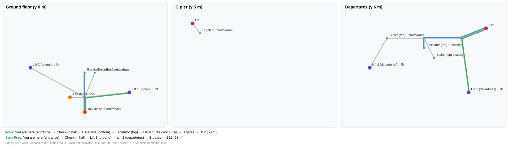
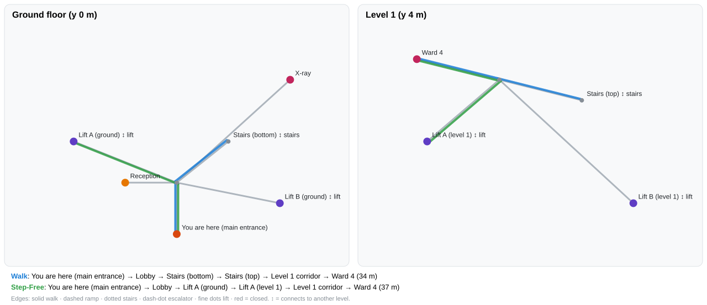
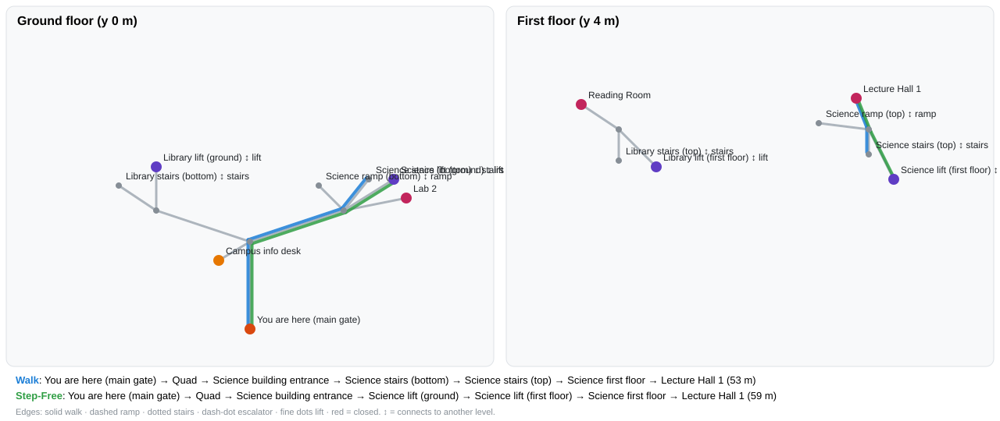
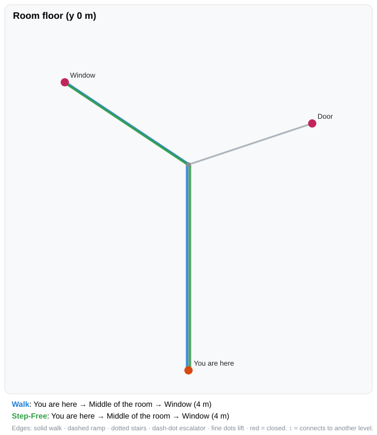

Find Your Way maps
Blue = Walk route, green = Step-Free route, from the start sign to the destination.
Stand-in airport floor map.json · downloaded from gist (identical to src/core/data)

Stand-in hospital wing hospital.json · downloaded from gist (identical to src/core/data)

Stand-in campus campus.json · downloaded from gist (identical to src/core/data)

Preview room floor room.json · downloaded from gist (identical to src/core/data)
